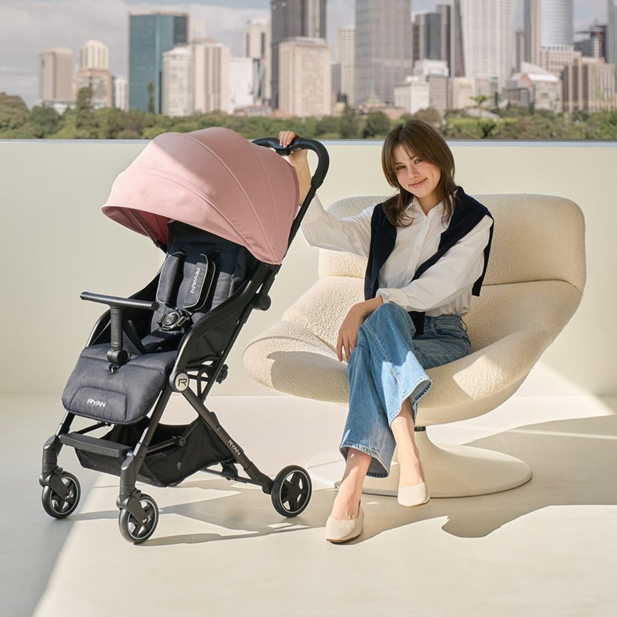
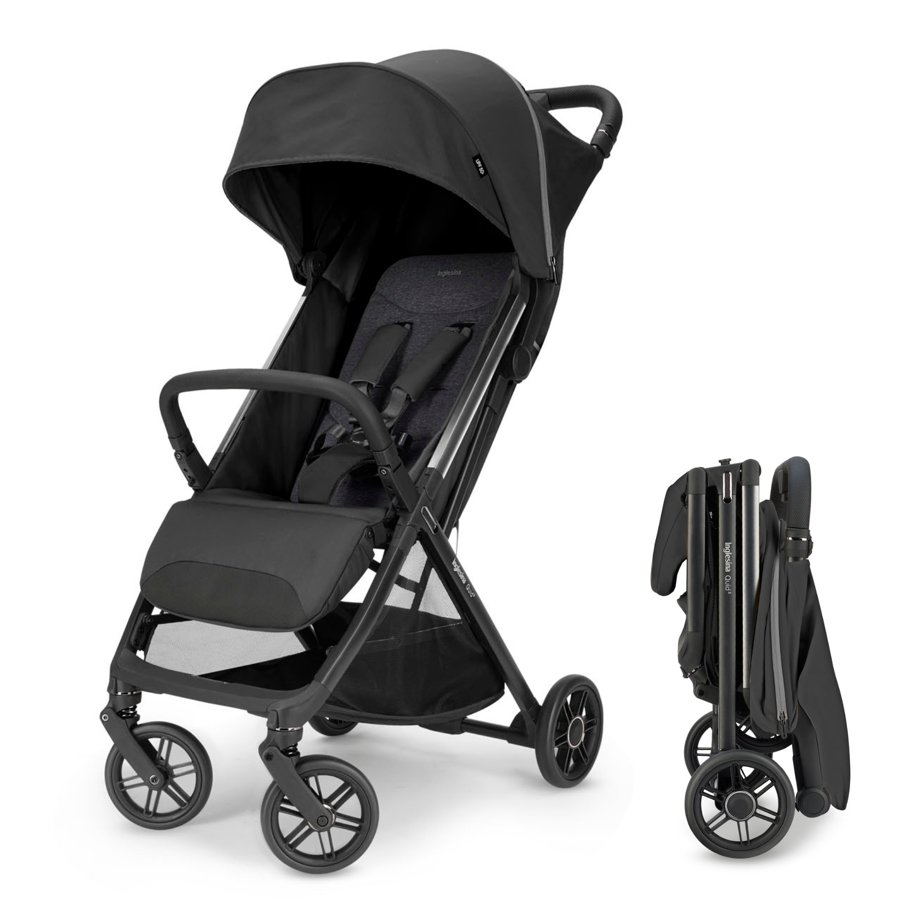
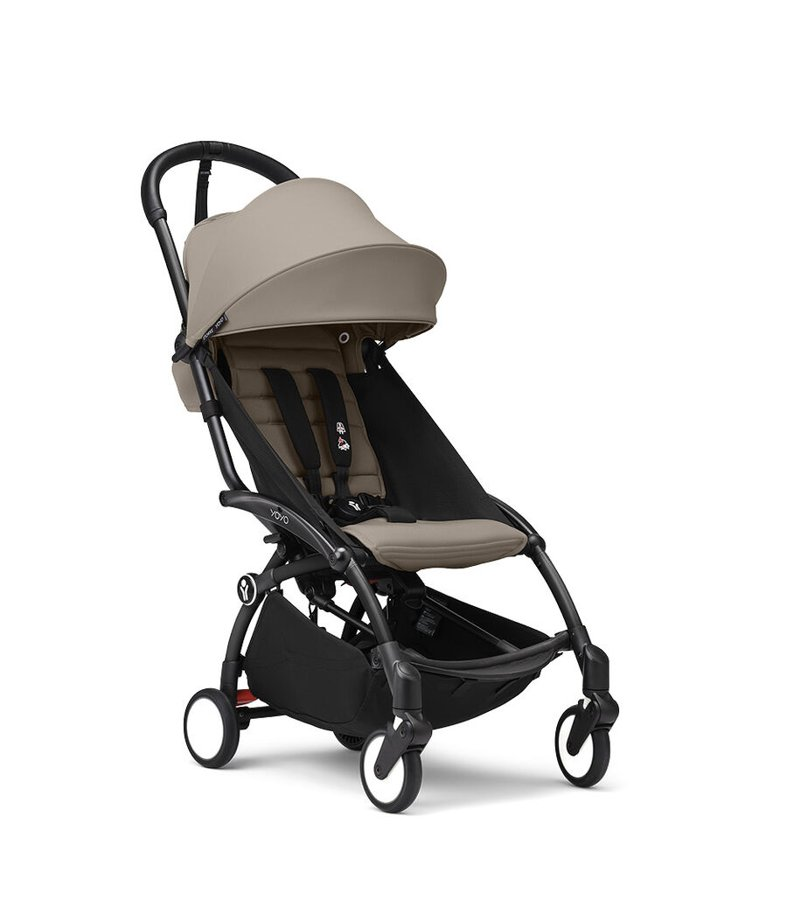
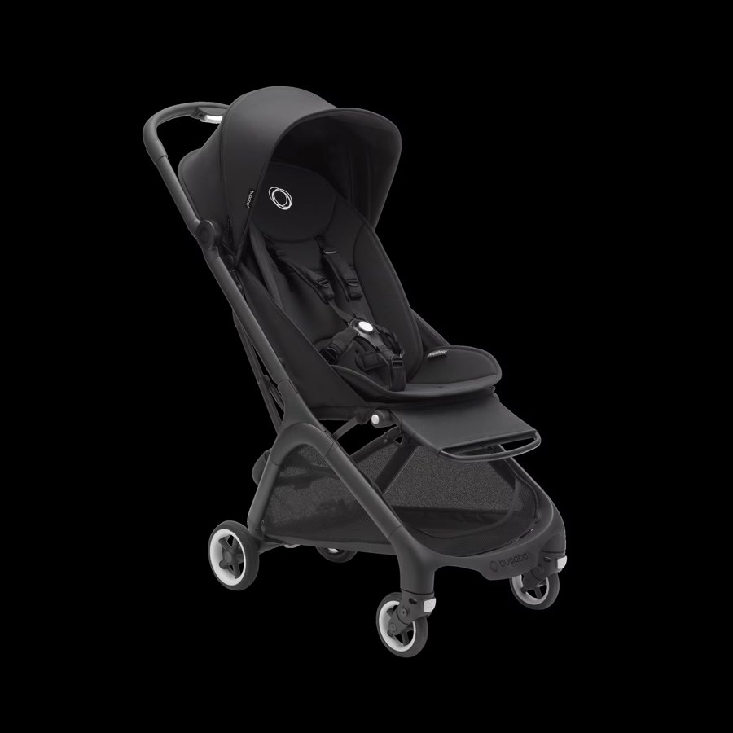

기내반입 휴대용 유모차 추천 5종, 무게·접은 크기·사용월령 비교(추석 연휴 준비)
추석 연휴가 슬슬 다가오고 있어요. 2026년 추석 연휴는 9월 24일(목)부터 27일(일)까지 나흘이에요(법정 공휴일은 24~26일 사흘이고, 27일은 원래 일요일이라 자연스럽게 이어져요). 아기 데리고 비행기로 움직이실 분들이라면 슬슬 유모차부터 챙겨두시는 게 마음 편할 텐데, 기내에 들고 타려면 무게도 무게지만 접었을 때 크기가 항공사 규정 안에 들어와야 하거든요.
미리 말씀드리면 이번 5종을 제가 전부 직접 태워본 건 아니고, 각 브랜드 공식몰·다나와 상세페이지를 꼼꼼히 대조해서 무게·크기·가격을 정리한 비교예요.
그리고 여기서 꼭 짚고 넘어가야 할 게 하나 있어요. 판매처 상세페이지에 붙어있는 '기내반입 가능'이라는 표기, 이건 KC 인증도 아니고 항공사가 공식으로 승인해준 것도 아니에요. 최종 판단은 결국 그날 탑승 게이트 직원이 하는 거라, 표기만 믿고 갔다가 크기·무게가 애매하면 위탁수하물로 넘어갈 수도 있어요.
참고로 유모차는 '어린이제품 안전특별법'에 따른 안전확인대상 어린이제품이에요. 국가기술표준원 제품안전정보센터에 따르면 유모차는 어린이제품 공통안전기준에 개별 유모차 안전기준까지 더해 통과해야 판매할 수 있어요. 그런데 이건 판매처가 붙이는 '기내반입 가능' 표기와는 완전히 별개 축이에요 — KC 안전인증은 국내 어린이제품 안전기준 통과 여부를 보는 거고, 기내반입 표기는 항공사가 정한 크기·규격에 맞나를 판매처가 자체 판단해 적어둔 거라 서로 무관해요.
🚀 바쁘면 이것만 보세요
- 무게가 최우선이면 → 베이비싱 휴대용 S-GO V3(4.9kg, 다섯 중 가장 가벼움)
- 접은 크기까지 숫자로 확인하고 싶으면 → 잉글레시나 퀴드3(접은 3변 합 116.8cm을 공식 페이지에서 정확히 공개)
- 가격 부담을 줄이고 싶다면 → 리안 그램플러스(27만 8천 원대, 신생아부터)
- 브랜드 신뢰·마감을 우선한다면 → 스토케 요요3(2024년형)
- 오래 오래(48개월까지) 태울 계획이라면 → 부가부 버터플라이(단 접은 3변 합이 약 122cm로 대한항공 115cm 기준보다 커요)
항공사마다 기내에 들고 탈 수 있는 유모차 무게 기준이 보통 7~10kg 선에서 다르게 운영돼요. 그래서 이번 비교는 무게 하나만 보지 않고, 무게·접은 3변 합·사용월령(허용체중) 세 가지를 축으로 잡아 5종을 정리해봤어요. 정확한 항공사별 숫자는 갈리니, 이용하실 항공사 홈페이지·고객센터로 출발 전 재확인하시는 게 제일 안전해요.
5종, 한눈에 비교해보면
| 제품 | 무게 | 접은 3변 합 | 사용월령/허용체중 | 가격 | 추천도* |
|---|---|---|---|---|---|
| 리안 그램플러스 | 5.8kg | 미공개 | 신생아~36개월·15kg | 278,000원 | ★★★☆☆ |
| 잉글레시나 퀴드3 | 6.4kg | 116.8cm | 출생부터·최대 약 25kg(55lbs) | 638,000원 | ★★★★☆ |
| 스토케 요요3(2024년형) | 6.2kg | 미공개 | 6~36개월·15kg | 716,000원 | ★★★☆☆ |
| 베이비싱 휴대용 S-GO V3 | 4.9kg | 미공개 | 신생아~36개월·20kg | 8만원대~ | ★★★☆☆ |
| 부가부 버터플라이(2022년형) | 7.3kg | 약 122cm(115cm 초과) | 6~48개월·22kg | 75만~95만원대(변동폭 큼) | ★★☆☆☆ |
*종합기준: 접은 3변 합이 미공개거나 대한항공 기준(115cm)을 넘는 제품은 별점을 낮춰 표기했어요. 가격은 작성 시점 기준이라 이후 달라질 수 있어요.
리안 그램플러스

국내 유아용품 브랜드 리안이 내놓은 그램플러스는 이름 그대로 '그램(무게)'을 앞세운 제품이에요. 무게가 5.8kg으로 가벼운 축에 들고, 신생아 때부터 36개월·15kg까지 탈 수 있어서 오래 쓸 수 있다는 점을 내세워요. 다나와 상세페이지에도 '기내반입가능'이라고 표기돼 있어요.
- 👍 오늘 비교한 것 중 가장 낮은 가격대, 신생아 때부터 바로 사용 가능
- 👎 접었을 때 가로·세로·높이를 다 더한 3변 합은 다나와 상세페이지에 따로 공개돼 있지 않아요. 항공사 규정을 딱 맞춰 확인하고 싶다면 이 부분은 구매 전 판매처에 직접 문의해보시는 게 좋아요
가벼운 무게 + 낮은 가격을 우선 순위로 두는 분께 추천해요.
잉글레시나 퀴드3

이탈리아 유아용품 브랜드 잉글레시나의 퀴드3(Quid3)는 접었을 때 크기를 제조사가 공식 페이지에 정확한 수치로 공개한 제품이에요. 공식 무게는 14lbs, 우리 단위로 환산하면 약 6.35kg 수준이고 다나와 등 국내 판매처엔 6.4kg으로 표기돼 있어요. 접은 크기는 15.5×7.5×23인치, 센티미터로 바꾸면 약 39.4×19.1×58.4cm — 세 변을 다 더하면 116.8cm가 나와요. 사용월령은 공식 페이지에 "출생부터, 최대 55lbs(약 25kg)까지"로 명시돼 있어요.
- 👍 리안·요요3·베이비싱 S-GO V3와 달리 접은 크기가 숫자로 정확히 공개돼 있어 항공사 규정과 직접 비교하기 편해요
- 👎 미국 공식가는 $399인데 국내 판매가는 63만 8천 원대로 판매처마다 환산·마진 차이가 있고, 신생아 카시트를 물리려면 퀴드3 전용 카시트 어댑터를 별도로 사야 해요
접은 크기까지 숫자로 확인하고 항공사에 문의하고 싶은 분께 제일 잘 맞아요.
스토케 요요3(2024년형)

노르웨이 브랜드 스토케의 요요 시리즈는 국내에서도 인지도가 높은 휴대용 유모차예요. 이번 비교에 넣은 건 2024년형 요요3로, 무게 6.2kg에 6개월부터 36개월·15kg까지 탈 수 있다고 표기돼 있어요. 가격은 71만 6천 원대로 이번에 비교한 제품 중 가장 높은 편이지만, 브랜드 신뢰도와 마감 품질을 우선하는 수요가 꾸준한 제품이에요.
- 👍 브랜드 인지도·마감 품질, 6개월 이후 장기 사용에 맞춘 설계
- 👎 접은 3변 합은 다나와 상세에 따로 나와 있지 않아요. 다나와엔 이전 모델인 요요2(가격비교 중지, 신생아~5세)도 함께 검색되니, 구매하실 땐 모델명·연식이 '요요3'인지 꼭 확인해주세요
브랜드 신뢰도와 마감을 우선하고, 6개월 이후부터 탈 계획이면 잘 맞아요.
베이비싱 휴대용 S-GO V3
베이비싱의 휴대용 S-GO V3는 무게 4.9kg으로 오늘 비교한 것 중 가장 가벼워요. 신생아부터 36개월·20kg까지 탈 수 있다고 표기돼 있고, 가격대는 8만원대~로 이번 비교 중 가장 부담 없는 선택이에요(조사 시점마다 8만~9만 8천 원대로 조금씩 움직여서 '8만원대~'로만 적어둘게요).
구매 전 꼭 확인하실 것 — 다나와에서 'S-GO V3'를 검색하면 '베이비싱 에스고 V3 절충형'이라는 제품도 함께 뜨는데, 이건 이번에 비교하는 휴대용 S-GO V3와는 다른 하이브리드형 별개 라인이에요. 이름이 비슷해서 헷갈리기 쉬우니, 제품명에 '절충형'이 붙어 있지 않은지 꼭 확인해서 구매해주세요.
- 👍 가장 가벼운 무게, 가장 부담 없는 가격대, 20kg까지 넉넉한 허용체중
- 👎 접은 3변 합은 공개돼 있지 않고, 이름이 비슷한 '절충형' 제품과 혼동하기 쉬워요
무게를 최우선으로 보고, 가격 부담을 줄이고 싶은 분께 추천해요.
부가부 버터플라이(2022년형)

네덜란드 브랜드 부가부의 버터플라이는 6개월부터 48개월·22kg까지 탈 수 있어서 오늘 비교한 것 중 가장 오래 쓸 수 있는 제품이에요. 국내 공식 페이지는 접속이 안 됐지만, 미국 공식 페이지에서 정확한 접은 치수를 확인할 수 있었어요 — '가장 압축된 상태(IATA 호환)' 기준 17.72×9.06×21.26인치, 센티미터로 바꾸면 약 45.0×23.0×54.0cm, 세 변을 더하면 약 122cm가 나와요. 이건 앞서 안내드린 대한항공 3변 합 115cm 기준보다 7cm가량 더 큰 수치예요.
- 👍 가장 오래(48개월까지) 탈 수 있고, 허용체중도 22kg으로 가장 넉넉해요
- 👎 무게가 가장 무겁고(7.3kg), 접은 3변 합(약 122cm)이 대한항공의 115cm 기준을 넘어서 이 항공사는 반입이 어려울 수 있어요. 가격도 판매처마다 편차가 커요
48개월까지 오래 태울 계획이 있는 분께는 매력적이지만, 대한항공처럼 115cm 기준을 쓰는 항공사라면 접은 크기가 걸릴 수 있어요 — 이용하실 항공사에 반드시 먼저 확인하고 결정하세요.
항공사 규정, 출발 전에 꼭 확인하세요
대한항공은 가로+세로+높이 3변의 합이 115cm 이하이면서 완전히 접히는 일자형 휴대용 유모차만 기내 반입을 허용한다고 알려져 있어요. 다만 이 수치는 제가 대한항공 공식 홈페이지에서 직접 확인한 게 아니라, 2023년 8월 5일 뉴시스 보도를 근거로 정리한 값이에요 — 공식 페이지 확인이 원활하지 않아 보도 기준으로만 확인됐다는 점 참고해주세요.
이건 대한항공 기준이고, 다른 항공사는 무게·크기 기준이 또 다를 수 있어요. 특정 항공사 숫자를 여기서 다 단정하긴 어려워요.
정답이 딱 하나 있는 건 아니고, 결국 우리 항공 일정이랑 아이 월령, 짐 상황에 맞춰 고르시는 게 제일이더라고요. 그리고 어떤 유모차를 고르시든 '기내반입 가능' 표기는 참고일 뿐이니, 출발 전 이용하실 항공사에 무게·크기 기준을 꼭 한 번 더 확인하시는 게 제일 확실해요.
✔ 육아템 같이 보기 좋은 내용
· 지난번에 정리한 여름 아기띠 추천 순위, 스텝원·베이비뵨·옴니360 3종 비교 글도 참고하시면 좋아요(발행 시 링크 연결 예정).